Our Products
Legacy Modernizer
AI 기반 레거시 모더나이저 도구는 기존의 복잡한 스토어드 프로시저를 현대적이고 클린한 자바 아키텍처로 변환하도록 설계되었습니다. 이 도구는 단순한 표면적 변환을 넘어, 구조적이고 문법적인 변화를 포함하여 공유 데이터베이스 절차 방식에서 견고한 객체 지향 모델로의 전환을 지원합니다.
핵심 변환 과정에서는 비즈니스 로직이 포함된 난해한 PL/SQL 코드를 도메인 전문가와 개발자가 쉽게 협업하고 유지할 수 있도록 유비쿼터스 언어를 사용하여 보다 접근하기 쉬운 형태로 전환합니다. 이를 통해 코드의 이해도와 유지보수성을 크게 향상시킵니다.
| 사람에 의한 직접 전환 | AI 기반 자동화 전환 | ||
|---|---|---|---|
| 개발 과정 | 복잡하고 전문가의 개입 필요 | AI가 자동으로 복잡성 해결 | |
| 인건비 | 전문가 집중으로 비용 상승 | 자동화로 인건비 절감 | |
| 유지보수 | 코드 이해 및 수정 어려움 | ➜ | 클린 아키텍처로 유지보수 용이 |
| 오류 가능성 | 수동 개입으로 오류 발생 가능 | AI 정확도로 오류 최소화 | |
| 협업 효율 | 제한적 커뮤니케이션 | 유비쿼터스 언어로 커뮤니케이션 강화 |
Our Values
Legacy Code 2 Clean Code 동작 세부 구조
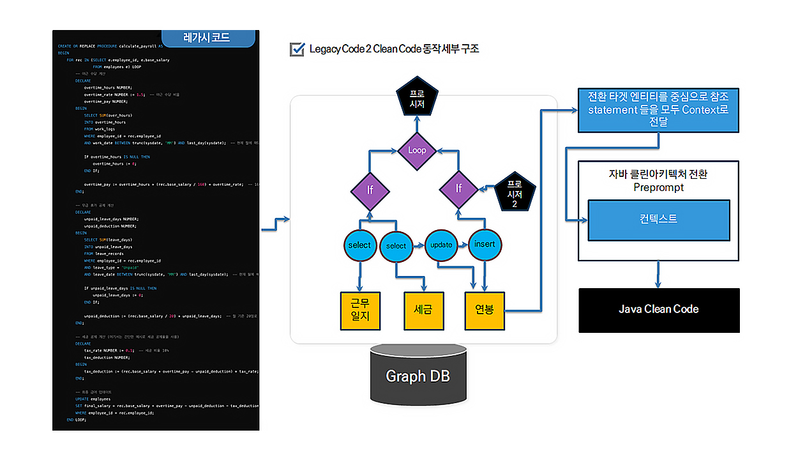
Flowchart
- 구문 분석:
스토어드 프로시저 파일의 내용 전체를 LLM (Large Language Model)에게 전달하게 되면, 최대 토큰 수를 넘어가기 때문에, LLM (Large Language Model)에 데이터를 전달할 때, 토큰 제한과 문맥 유지를 고려하여 의미적으로 연결된 덩어리로 쪼개서 전달하는 것이 중요합니다.
예를 들어 코드 내에서 각 블록(예: IF 문, SELECT 문, DECLARE)은 중간에서 잘라 전달하지 않고, 의미적으로 완전한 단위로 나누어 전달하게 되면, 문맥을 유지되고, 모델이 데이터를 정확하게 이해하고 처리할 수 있게 됩니다. 이를 위해 ANTLR (ANother Tool for Language Recognition) 같은 파싱 도구를 사용하여 코드의 구조를 파악하고, 이를 트리 구조로 변환하는 과정이 필요합니다. 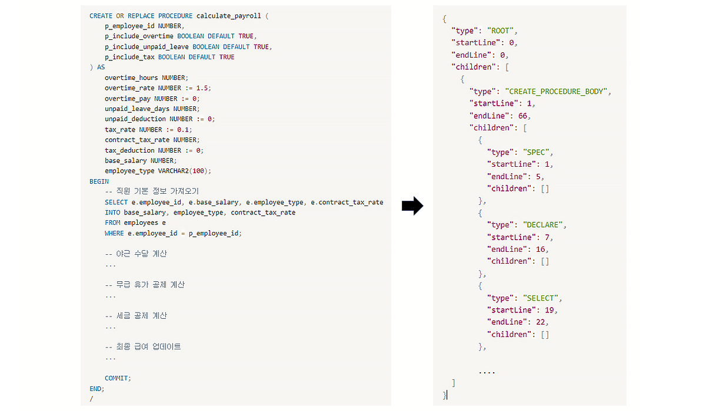 -
그래프 시각화:
레거시 코드(스토어드 프로시저)의 복잡한 구조를 관계형 그래프로 시각화하여 이해하기 쉽게 만듭니다. Antlr로 생성된 구문 트리를 기반으로 프로시저의 구조를 분석하고, 수집된 토큰들을 LLM을 통해 의미론적 정보로 추출하여 그래프 데이터베이스에 노드와 관계를 구성합니다. 이렇게 시각화된 그래프는 프로시저 간의 상호작용과 데이터 흐름을 명확히 보여주어, 개발자와 도메인 전문가가 코드의 구조와 의도를 쉽게 이해하고 문제점을 빠르게 식별하여 효율적으로 리팩토링할 수 있게 합니다.
《 벡터 DB와 그래프 DB를 이용한 RAG 기법의 차이 》
측면 벡터 데이터베이스 그래프 데이터베이스 (KG) 자료 구조 

데이터 유형 텍스트, 이미지, 오디오와 같은 대량의 비구조화된 데이터 관리에 이상적입니다. 복잡한 관계를 가진 엔터티 간의 구조화된 데이터에 적합합니다. 도메인 적합성 ML 모델과 데이터 유형의 다양성이 필요한 애플리케이션에서 자주 사용됩니다. 특정 도메인에 대한 깊이 있는, 전문화된 지식이 요구되는 애플리케이션에 매우 효과적입니다. 설명 가능성 KG보다는 투명성이 떨어지며, 명확한 경로보다는 유사성 점수에 초점을 맞춥니다. 명확한 추론 경로를 제공하여 설명 가능성이 높습니다. 데이터 무결성 데이터 모델링의 유연성이 때때로 엄격한 데이터 일관성을 저해할 수 있습니다. 데이터 무결성과 일관성을 유지하며, 신뢰할 수 있는 데이터 표현에 필수적입니다. 하이브리드 사용 사례 KG와 결합되어 구조화된 데이터와 비구조화된 데이터를 모두 효과적으로 처리할 수 있습니다. 구조화된 지식과 ML 기능을 활용하기 위해 벡터 데이터베이스와 결합할 수 있습니다. Source: RAG: Vector Databases vs Knowledge Graphs? | by Ahmed Behairy | Medium
- 자바로 전환: 그래프 데이터베이스에 저장된 구조화된 정보를 기반으로 LLM AI 기술을 활용하여 Java 코드로의 자동 변환이 이루어집니다. PL/SQL의 테이블 구조는 Java의 엔티티 클래스로 매핑되며, SELECT, INSERT와 같은 데이터 조작 구문은 JPA 리포지토리 인터페이스로 변환됩니다. AI는 복잡한 비즈니스 로직을 정확하게 해석하여 서비스 클래스로 구현하며, 이를 통해 개발자와 도메인 전문가가 쉽게 이해하고 유지할 수 있는 현대적이고 클린한 계층화된 Java 애플리케이션 구조를 형성합니다. 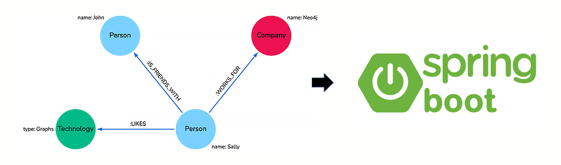
- 결과 검증 테스트: 변환된 Java 코드의 정확성 검증을 위해 AI 기반의 JUnit 테스트 자동 생성 시스템을 구현했습니다. 사용자는 테스트에 필요한 초기 데이터(Given)와 검증하고자 하는 프로시저(When)를 선택할 수 있으며, 테스팅 AI가 이를 기반으로 적절한 테스트 케이스를 자동으로 생성하고 실행합니다. 이를 통해 PL/SQL에서 Java로 전환된 코드가 기존 레거시 시스템의 비즈니스 로직을 정확하게 구현하는지 실시간으로 검증할 수 있으며, 기존 시스템의 기능적 완전성을 유지하면서도 새로운 아키텍처로의 전환이 원활하게 진행될 수 있도록 보장합니다. 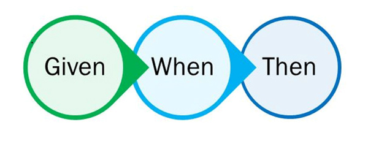
'스토어드 프로시저'에서 '자바 클린 아키텍처'로 전환할 때의 이점
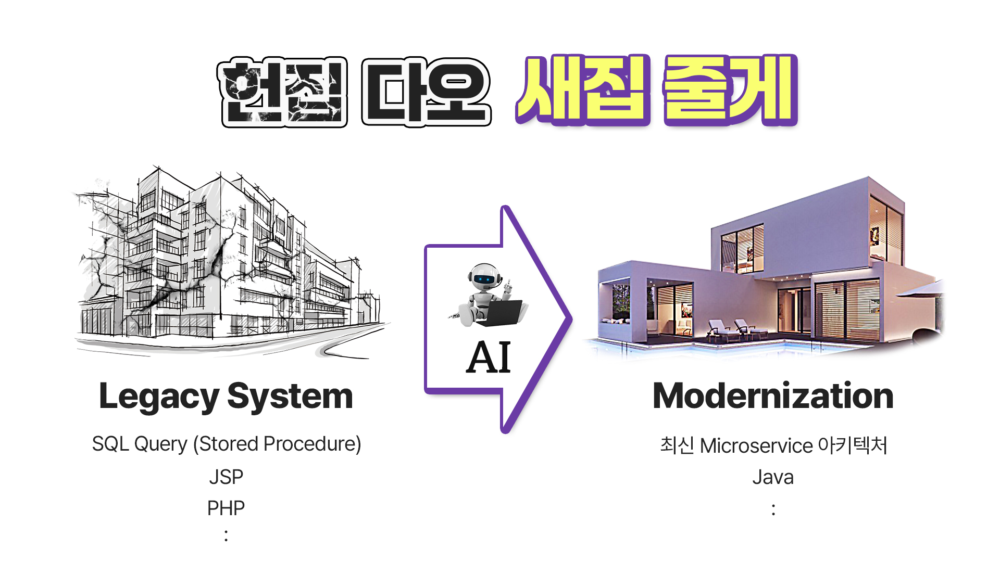
- 유지보수성 향상: 스토어드 프로시저는 데이터베이스 시스템에 종속적이어서, 변경이 필요할 때마다 데이터베이스 전문가의 개입이 필요합니다. 이는 유지보수 과정에서 특정 전문 지식을 요구하며, 접근성이 제한됩니다. 반면, 자바와 같은 범용 프로그래밍 언어로 로직을 이전하면, 더 넓은 범위의 개발자가 시스템을 이해하고 수정할 수 있어 유지보수성이 크게 향상됩니다. 이는 자바가 제공하는 풍부한 문서와 커뮤니티 지원 덕분에 가능하며, 시스템의 유연성과 접근성을 높여줍니다.
- 테스트와 디버깅 용이성: 스토어드 프로시저는 데이터베이스 내부에서 실행되기 때문에 테스트와 디버깅이 복잡하고 어려운 반면, 자바로 로직을 이전하면 모던 개발 환경에서 제공하는 다양한 테스트 및 디버깅 도구를 활용할 수 있습니다. 자바 환경은 단위 테스트, 통합 테스트 등을 쉽게 구현할 수 있으며, 디버깅 시 시각적 도구와 로깅 기능을 통해 문제를 빠르고 정확하게 식별할 수 있습니다.
- 확장성 및 유연성: 자바와 같은 범용 프로그래밍 언어로 작성된 코드는 플랫폼 독립적이며, 다양한 운영 체제와 환경에서 실행될 수 있습니다. 이는 클라우드 기반 아키텍처와 같은 현대적인 인프라에 쉽게 통합되어 시스템의 확장성과 유연성을 크게 향상시킵니다. 반면, 스토어드 프로시저는 특정 데이터베이스 시스템에 종속되어 있어, 다른 환경으로의 이전이나 확장이 어렵습니다. 이로 인해 클라우드와 같은 새로운 기술 환경에 적응하는 데 제한이 있으며, 시스템의 확장성과 유연성이 자바에 비해 상대적으로 낮습니다.
- 개발 효율성 증가: 자바는 강력한 라이브러리와 프레임워크를 지원하며, 전 세계적으로 활발한 개발자 커뮤니티가 있어 다양한 개발 리소스와 지원을 받을 수 있습니다. 이는 개발 속도와 효율성을 크게 향상시키는 요소입니다. 반면, 스토어드 프로시저는 특정 데이터베이스 시스템에 종속되어 있으며, 사용할 수 있는 라이브러리나 도구가 제한적이고, 개발자 커뮤니티도 자바만큼 크지 않습니다. 이로 인해 개발과 유지보수 과정에서 자바에 비해 상대적으로 더 적은 지원을 받게 되며, 개발의 유연성과 속도가 제한될 수 있습니다.
- 시스템의 안정성 및 보안 강화: 자바는 가비지 컬렉션을 통한 자동 메모리 관리와 구조화된 예외 처리 메커니즘을 제공하여 메모리 누수와 예외 상황을 효과적으로 관리합니다. 반면, 스토어드 프로시저는 데이터베이스 엔진에 의존한 메모리 관리와 더 제한적인 예외 처리 기능을 가지고 있어, 자바만큼 세밀한 제어가 어렵습니다. 또한, 자바는 다양한 보안 프레임워크와 라이브러리를 통해 강력한 보안 기능을 제공하는 반면, 스토어드 프로시저는 이러한 보안 기능을 내장하고 있지 않아 보안 측면에서 유연성과 확장성이 제한됩니다.
HOW TO USE
[기능 적용 사례 : 근태 관리 시스템 자바 코드 전환]
1. TPX_UPDATE_SALARY (프로시저)
- 주요 기능: 직원의 급여 정보를 갱신하는 메인 프로시저
- 요구사항 정의:
- 직원이 존재하지 않을 경우 신규 직원으로 등록
- 해당 급여 기간에 대한 급여 정보가 없을 경우 신규 등록
- 결근 일수에 따른 급여 차감 처리
- 모든 오류 상황에 대한 예외 처리
2. TPX_EMPLOYEE (패키지)
- 주요 기능: 직원 정보 관리를 위한 패키지
- 요구사항 정의:
- 직원 등록 (INS_EMPLOYEE)
- 신규 직원 정보 등록
- 중복 직원 검증
- 직원 존재 확인 (EXISTS_EMPLOYEE)
- 직원키를 통한 존재 여부 확인
- 정규직 여부 확인 (IS_REGULAR_EMPLOYEE)
3. TPX_SALARY (패키지)
- 주요 기능: 급여 관리를 위한 패키지
- 요구사항 정의:
- 급여 등록 (INS_SALARY)
- 신규 급여 정보 등록
- 결근에 따른 급여 수정 (UPD_SALARY_BY_ABSENT)
- 정규직: 결근당 10만원 차감
- 비정규직: 결근당 20만원 차감
- 급여 조회 (GET_SALARY)
- 특정 직원의 특정 급여일자 기준 급여 조회
- 특정 직원의 특정 급여일자 기준 급여 정보 존재 여부 확인
4. TPX_ATTENDANCE (패키지)
- 주요 기능: 출퇴근 관리를 위한 패키지
- 요구사항 정의:
- 출퇴근 등록 (INS_ATTENDANCE)
- 일일 출퇴근 정보 등록
- 직원 존재 여부 검증
- 출퇴근 상태 코드 관리
- 결근 일수 조회 (GET_ABSENT_DAYS)
- 특정 기간 동안의 결근 일수 계산
- 직원 존재 여부 검증
- 'AB' 상태코드로 결근 여부 판단
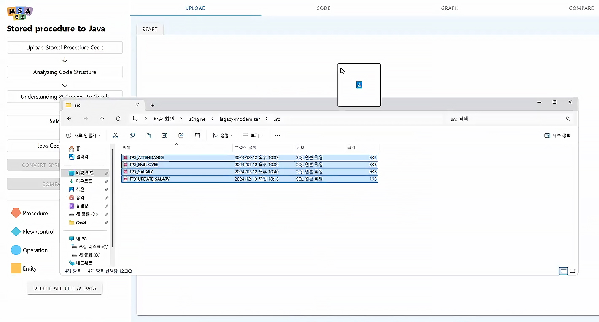
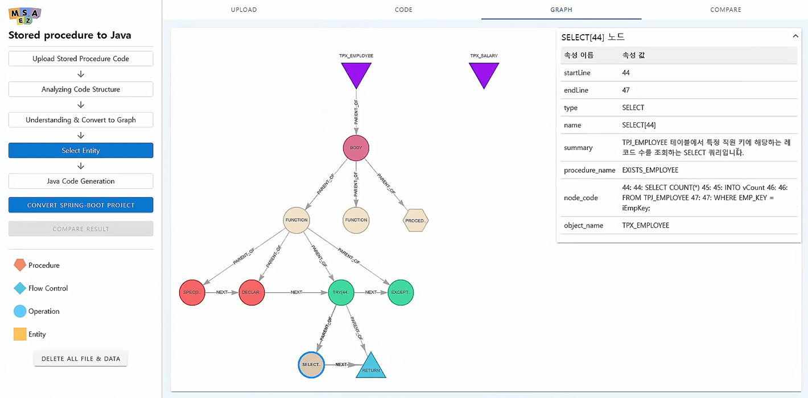
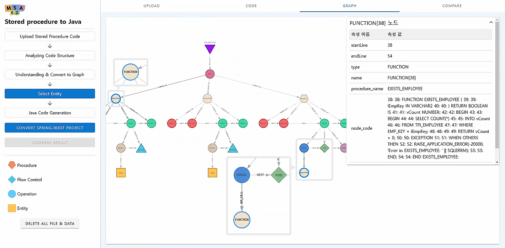
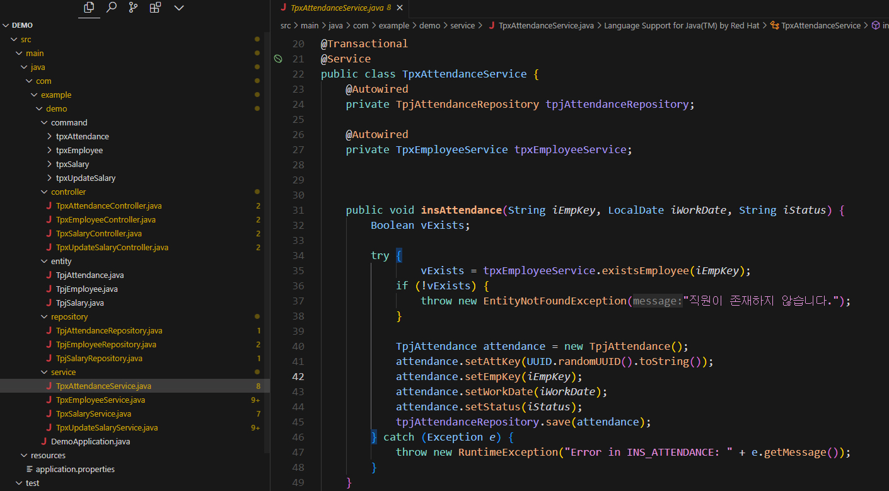
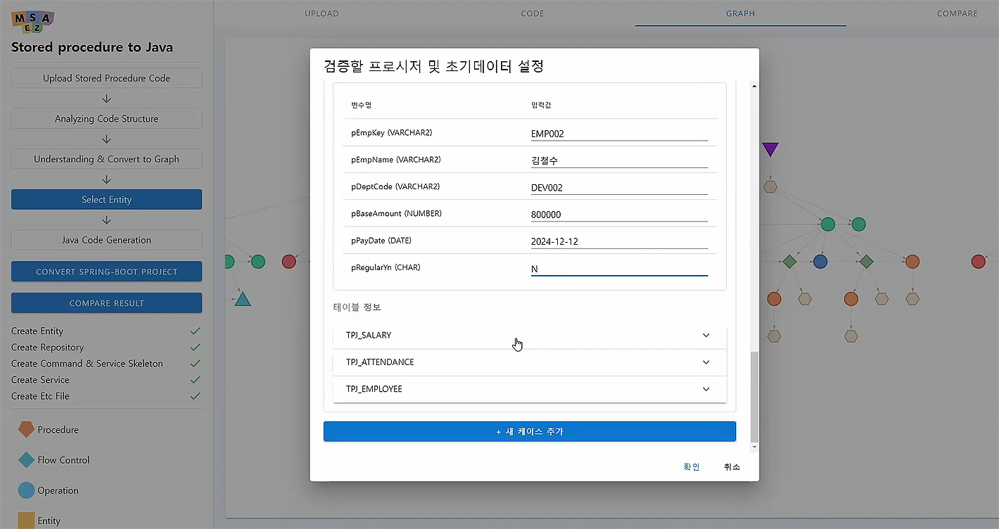
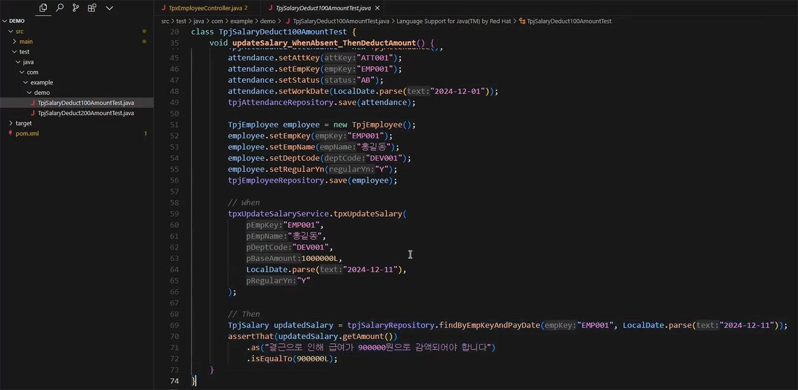
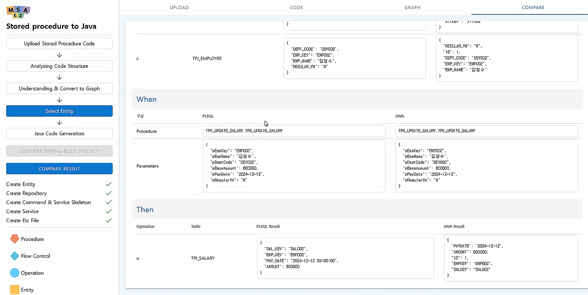